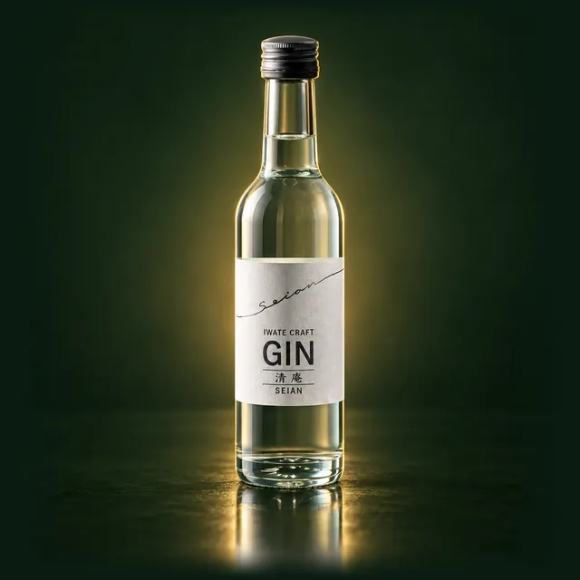
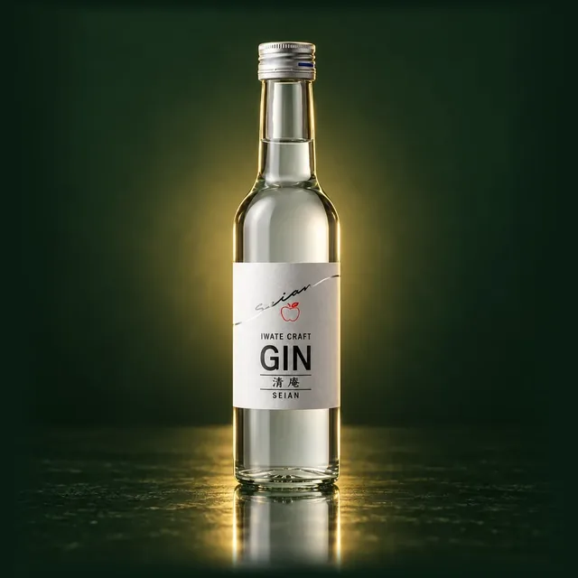

世嬉の一酒造
岩手県一関市
岩手県のクラフトジン蒸溜所。Gin-DBでは代表銘柄「清庵 -SEIAN-」など2銘柄を掲載しています。
画像はイメージです
世嬉の一酒造について
ブランド名は一関の偉人「建部清庵（たけべせいあん）」に由来。江戸時代の蘭学者・医者で、飢饉に備えて食べられる野草などを記した『民間備荒録』を著した人物です。ジンを始めたきっかけは、新型コロナウイルスで手指消毒液が不足した際、自社の蒸留機でビールを蒸留して高濃度アルコールを提供したこと。ベースには自社醸造のビール（いわて蔵ビール）を使っています。
銘柄一覧（2件）
PR ／ アフィリエイトリンクを含みます。
※ 参考価格は公式希望小売価格 or 市場実勢を記載時点で表示。実勢価格は楽天市場・Amazon等のリンク先で最新値をご確認ください。

画像はイメージです清庵 -SEIAN-
世嬉の一酒造（1918年5月1日創業、岩手県一関市）が2020年10月に立ち上げた岩手初のクラフトジンブランド。原材料は自家醸造のスピリッツと、ジュニパーベリー・山椒の実・クロモジ・ヒバ。地域の季節のボタニカルで蒸溜するため、ロット毎に香りが変わるのが特徴です。

画像はイメージです清庵 SEIAN りんごバージョン
世嬉の一酒造（1918年5月1日創業、岩手県一関市）のクラフトジン清庵SEIANのりんごバージョン。原材料は自家醸造のスピリッツ・ジュニパーベリー・りんご、40%です。
※ 限定
東北の他の蒸溜所
あわせて読む
蒸溜所情報
| 運営 | 世嬉の一酒造株式会社 |
| 所在地 | 岩手県一関市 |
| 創業・設立 | 1918年（大正七年・ジン参入2020年） |
| 公式サイト | https://sekinoichi.co.jp/ |
※ 掲載内容は公式サイト（一次ソース）を確認した時点のものです。製法・見学情報は公式サイトが、価格と在庫は楽天市場・Amazon・Yahoo!ショッピングのほうが更新が早いため、購入前は下記のリンク先でご確認ください。
ふるさと納税の返礼品にもなっています
清庵 SEIANは、世嬉の一酒造（岩手県一関市）のふるさと納税の返礼品にもなっています。
寄附額¥35,000（楽天ふるさと納税）
PR ／ アフィリエイトリンクを含みます。寄附額・在庫は各ポータルでご確認ください。